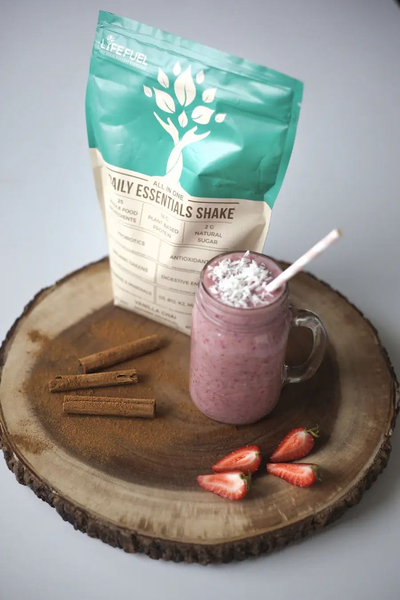
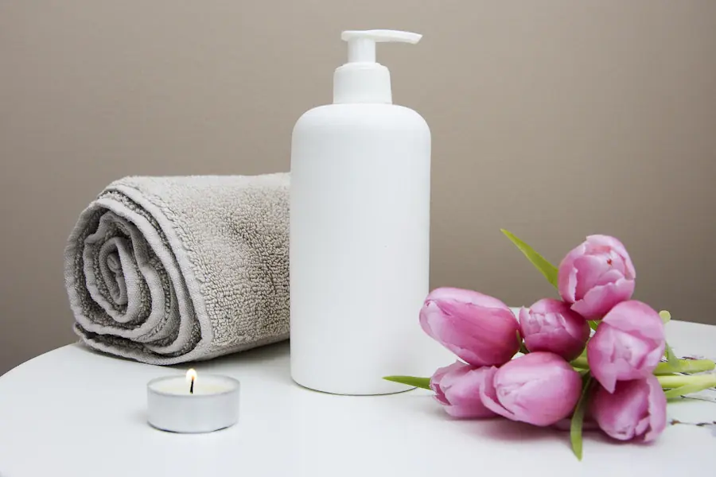

DAILY WELLNESS
DAILY WELLNESSMake space for your routine
Explore everyday wellness essentials and find product details in one place.
Shop wellness →
Find trusted wellness, personal-care, and first-aid essentials, all in one thoughtful place.
Thoughtful essentials for the routines and small moments that make up life.
DAILY WELLNESSExplore everyday wellness essentials and find product details in one place.
Shop wellness → PERSONAL CARE
PERSONAL CAREBrowse approachable personal-care picks for simple daily rituals.
Shop personal care → FIRST AID
FIRST AIDDiscover first-aid items for your home kit and everyday preparedness.
Shop first aid →Thoughtful picks for your shelf, bag, and daily routine.
From finding the basics to getting a question answered, Stackly is here to make everyday pharmacy care feel more straightforward.
Get to know Stackly →Browse by familiar categories and discover everyday essentials.
Explore product details and reach out when something isn’t clear.
Our team can help with general product and order questions.
Shop the essentials you need, with support available along the way.
Explore wellness, personal care, and first-aid items by category.
Check your products and quantities before you continue to checkout.
Available delivery options and timing are shown for your address at checkout.
Some questions are easier to handle with a person. Stackly’s team can help you find product information, understand order details, and learn which pharmacy services may be available in your area.
For personal medical advice, treatment decisions, or urgent concerns, please contact a qualified healthcare professional.
Explore pharmacy services →We’re building a thoughtful place for everyday essentials, clear information, and helpful support—so finding what you need feels a little easier.
Need something else? Our team is happy to point you in the right direction.
Visit Contact →Browse the Shop by category, or use the search field to look for a product by name.
Yes. Send us a note through the Contact page for general product or order questions.
Delivery choices and timing depend on your address and are shown during checkout.
Our site shares general product information. For advice about your health or medicines, speak with a qualified healthcare professional.
Clear, practical reading for the small things you plan for each day.
Keep product packaging and instructions easy to find, check expiry dates when you restock, and make sure household members know where essentials are stored.
Read the essentials guide →Start with what you already use, make room for the essentials that suit your needs, and ask a qualified professional when you need personal health advice.
Explore gentle routines →A few helpful reminders when you’re choosing pharmacy essentials.
Review product directions, ingredients, storage details, and warnings. If you can’t find what you need, contact our team before ordering.
Browse products →Prescription services and refill support may depend on your area and eligibility. Contact us to understand the available next steps.
Explore services →Online product information can’t replace personal medical guidance. Speak with a qualified healthcare professional about symptoms, medicines, or treatment.
Ask a general question →Tell us what you’re looking for and we’ll help point you toward the right information.
Our team can help you find product information or get support with an order.
From your morning routine to the things worth keeping close at home, find thoughtful support for everyday moments.
 YOUR DAILY ROUTINEMake room for a little care.Explore personal care →
YOUR DAILY ROUTINEMake room for a little care.Explore personal care →
WELLNESS, YOUR WAYBuild a routine that fits.Shop wellness →READY FOR HOMEKeep useful basics close.Explore first aid →Helpful information makes a difference. Read product labels and directions, and ask a qualified healthcare professional for personal medical advice.
Visit our journal →There’s no single way to care for yourself. Start with the little things that work for you, and find the essentials that help them feel easy.

01Leave a few minutes for a walk, a stretch, or a quiet cup of tea. Small moments of rest can bring a welcome reset to a full day.
Find a gentler rhythm → 02
02Choose practical steps you can return to: keep water nearby, prepare what you need in advance, and make your routine fit your day.
Explore everyday ideas → 03
03Check labels and instructions when choosing products. For advice tailored to your health, talk with a qualified healthcare professional.
See how we can help →